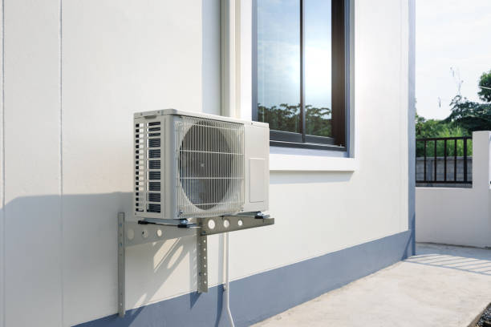
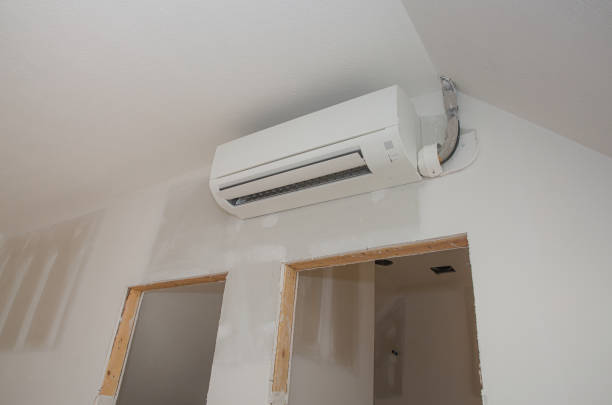
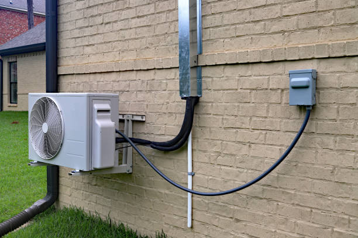

Professional Ductless Mini Splits MD Eldersburg, MD
Expert installation, repair, and maintenance services. 24/7 emergency support from certified technicians.
Premier Ductless Mini Split services in Eldersburg, Maryland
Welcome to Elite HVAC Solutions, your trusted local provider of professional ductless mini split systems MD Eldersburg, Maryland. Serving the entire Baltimore-Westminster metropolitan area including zip codes 21784 and 21144, we specialize MD delivering exceptional heating and cooling solutions that transform your home's comfort while maximizing energy efficiency.
As Eldersburg's leading ductless mini split specialists, we understand the unique climate challenges of central Maryland. Our expert technicians have over 15 years of combined experience installing, repairing, and maintaining ductless mini split systems for residential and commercial properties throughout Carroll County and beyond.

Why Choose Ductless Mini Splits for Your Eldersburg Home?
Ductless mini split systems represent the cutting-edge of modern HVAC technology, offering unparalleled efficiency and comfort control for Eldersburg residents. Unlike traditional central air systems that rely on extensive ductwork, ductless mini splits provide targeted heating and cooling directly to specific zones MD your home, eliminating energy waste and providing precise temperature control.
The benefits of ductless mini split systems for Eldersburg homeowners are substantial. These innovative systems offer superior energy efficiency ratings, often achieving SEER ratings of 20 or higher, which translates to significant savings on your monthly utility bills. Additionally, the zone-based control allows different family members to customize their comfort preferences MD individual rooms, eliminating the common household disputes over thermostat settings.
🏆 Why Elite HVAC Solutions is Eldersburg's #1 Choice
- 24/7 Emergency Service: Available around the clock for urgent repairs
- Expert Technicians: Certified professionals with extensive mini split experience
- Local Expertise: Deep understanding of Eldersburg's climate and housing
- Free Estimates: Comprehensive quotes with no hidden fees
- Satisfaction Guarantee: 100% satisfaction guarantee on all work
Comprehensive Ductless Mini Split services in Eldersburg
Our comprehensive service offerings cover every aspect of ductless mini split systems. Whether you're considering a new installation, need emergency repairs, or want to optimize your existing system's performance, Elite HVAC Solutions has the expertise and equipment to deliver exceptional results.
Professional Installation Services: Our certified technicians handle every aspect of ductless mini split installation with meticulous attention to detail. We begin with a comprehensive assessment of your Eldersburg property, analyzing factors such as room size, insulation levels, window placement, and sun exposure to design the optimal system configuration. Our installation process includes proper sizing calculations, strategic placement of indoor and outdoor units, professional refrigerant line installation, and thorough system testing to ensure peak performance from day one.
Expert Repair Services: When your ductless mini split system experiences problems, our experienced repair technicians respond quickly to diagnose and resolve issues. Common problems we address include refrigerant leaks, compressor failures, electrical issues, sensor malfunctions, and drainage problems. We maintain extensive inventories of genuine replacement parts for all major brands, ensuring fast repairs that restore your comfort quickly.
Preventive Maintenance Programs: Regular maintenance is crucial for maximizing the lifespan and efficiency of your ductless mini split system. Our comprehensive maintenance programs include thorough cleaning of indoor and outdoor units, filter replacement, refrigerant level checks, electrical connection inspections, and performance optimization. Eldersburg customers who participate MD our maintenance programs enjoy priority scheduling, discounted repairs, and extended equipment warranties.
Understanding Ductless Mini Split Technology
Ductless mini split systems consist of two main components: an outdoor condenser unit and one or more indoor air handling units. These components are connected by refrigerant lines that carry heated or cooled refrigerant between the units. The outdoor unit houses the compressor, condenser coil, and fan, while the indoor units contain the evaporator coil, air filter, and fan that distributes conditioned air throughout the room.
The operation of ductless mini splits is remarkably efficient. During cooling mode, the outdoor unit compresses refrigerant and sends it to the indoor units, where it absorbs heat from the indoor air and returns to the outdoor unit for heat rejection. MD heating mode, the process reverses, with the outdoor unit extracting heat from the outside air and transferring it indoors. This heat pump technology allows ductless mini splits to provide both heating and cooling with exceptional efficiency.
One of the most significant advantages of ductless mini splits for Eldersburg residents is their ability to provide effective heating even MD cold weather. Modern mini split systems can operate efficiently MD temperatures as low as -15°F, making them an excellent year-round solution for Maryland's varied climate. The inverter technology used MD quality mini split systems allows the compressor to modulate its speed based on demand, maintaining consistent temperatures while minimizing energy consumption.
⭐ Real Reviews from Satisfied Eldersburg Customers ⭐
"Elite HVAC Solutions installed our ductless mini split system last year, and we couldn't be happier. Our energy bills have dropped significantly, and every room is perfectly comfortable. Their technicians were professional and knowledgeable." - Sarah M., Eldersburg
"When our mini split stopped working during the heat wave, Elite HVAC was at our house within 2 hours. Fast, reliable service that saved our family from a miserable night!" - Mike T., Eldersburg
Energy Efficiency and Cost Savings
The energy efficiency of ductless mini split systems makes them an increasingly popular choice among environmentally conscious Eldersburg homeowners. These systems typically achieve SEER (Seasonal Energy Efficiency Ratio) ratings between 18 and 30, compared to central air systems that average between 13 and 16 SEER. This superior efficiency translates to substantial cost savings on monthly utility bills, with many homeowners reporting reductions of 30-40% MD their heating and cooling costs.
The zoned approach of ductless mini splits contributes significantly to their efficiency advantages. Traditional central air systems condition the entire home to a single temperature, regardless of whether all areas are occupied. Ductless mini splits allow you to heat or cool only the rooms you're using, eliminating the waste associated with conditioning unoccupied spaces. This targeted approach is particularly beneficial for Eldersburg homes with varying occupancy patterns or spaces that are used irregularly.
Additionally, ductless mini splits eliminate the energy losses associated with traditional ductwork. Studies have shown that typical duct systems lose 20-30% of conditioned air through leaks, poor connections, and inadequate insulation. By delivering conditioned air directly to living spaces, ductless mini splits capture this lost efficiency, providing superior comfort while using less energy.
Indoor Air Quality Benefits
Beyond energy efficiency, ductless mini split systems offer significant indoor air quality advantages for Eldersburg homes. Each indoor unit includes advanced filtration systems that continuously clean the air as it circulates. These filters capture dust, pollen, pet dander, and other airborne particles that can trigger allergies and respiratory issues. Many modern mini split systems also include additional filtration technologies such as ionizers and UV sterilization that eliminate bacteria, viruses, and odors.
The absence of ductwork MD ductless mini split systems eliminates many common indoor air quality problems. Traditional duct systems can harbor dust, mold, and other contaminants that circulate throughout the home with each heating and cooling cycle. Ductless systems avoid this issue entirely, providing cleaner, healthier air for your family.
Installation Considerations for Eldersburg Homes
The installation of ductless mini split systems MD Eldersburg requires careful consideration of several factors unique to the local area. Our experienced technicians evaluate each property's specific characteristics, including architectural style, insulation levels, and orientation, to design the optimal system configuration.
Proper sizing is crucial for ductless mini split performance and efficiency. Our technicians perform detailed load calculations that account for factors such as room dimensions, ceiling height, insulation quality, window size and orientation, and local climate conditions. This thorough approach ensures that your system provides adequate capacity without being oversized, which can lead to short cycling and reduced efficiency.
The placement of indoor and outdoor units requires strategic planning to maximize performance and minimize visual impact. Indoor units should be positioned to provide optimal air distribution while maintaining clear access for maintenance. Outdoor units need adequate clearance for proper airflow and should be located to minimize noise impact on neighbors and family members.
Seasonal Performance MD Maryland's Climate
Eldersburg's humid subtropical climate presents unique challenges for HVAC systems, with hot, humid summers and mild to cool winters. Ductless mini split systems excel MD this environment, providing efficient cooling during summer heat waves and reliable heating during cooler winter months.
During Eldersburg's hot summer months, ductless mini splits provide superior humidity control compared to oversized central air systems. The variable-speed operation allows the system to run longer cycles at lower speeds, maximizing moisture removal while maintaining comfortable temperatures. This enhanced dehumidification improves comfort and prevents issues associated with excessive indoor humidity, such as mold growth and musty odors.
Winter heating performance is where ductless mini splits truly shine MD the Eldersburg area. Modern cold-climate mini split systems maintain high efficiency ratings even when outdoor temperatures drop well below freezing. The advanced heat pump technology extracts heat from outdoor air even MD freezing conditions, providing reliable and efficient heating throughout Maryland's coldest months.
Brand Selection and Equipment Quality
Elite HVAC Solutions partners with leading ductless mini split manufacturers to ensure our Eldersburg customers receive the highest quality equipment available. We offer systems from trusted brands including Mitsubishi Electric, Daikin, Fujitsu, LG, and Carrier, each known for their reliability, efficiency, and innovative features.
Our technicians stay current with the latest technological advances MD ductless mini split systems, including smart home integration, advanced filtration systems, and enhanced cold-weather performance features. This expertise allows us to recommend the ideal system for your specific needs and preferences, ensuring years of reliable comfort and efficiency.
We understand that equipment quality directly impacts long-term satisfaction and operational costs. That's why we exclusively offer systems from manufacturers with proven track records of reliability and comprehensive warranty coverage. Our customers benefit from extended manufacturer warranties, often covering parts and labor for 5-12 years, providing peace of mind and protection for your investment.
Smart Home Integration and Advanced Features
Modern ductless mini split systems offer sophisticated smart home integration capabilities that enhance convenience and efficiency for Eldersburg homeowners. Wi-Fi enabled systems allow remote control and monitoring through smartphone apps, enabling you to adjust temperatures, monitor energy usage, and receive maintenance alerts from anywhere.
Advanced scheduling features allow you to program different temperatures for various times of day, automatically adjusting for occupancy patterns and preferences. Some systems include occupancy sensors that detect when rooms are empty and automatically adjust operation to save energy. These intelligent features work seamlessly with popular smart home platforms including Google Home, Amazon Alexa, and Apple HomeKit.
Commercial Applications MD Eldersburg
While residential applications represent the majority of our ductless mini split installations, Elite HVAC Solutions also serves Eldersburg's commercial community with professional-grade systems designed for business applications. Small offices, retail spaces, restaurants, and other commercial establishments benefit from the efficiency and flexibility of ductless mini split systems.
Commercial ductless mini split systems offer businesses precise climate control with minimal disruption to operations during installation. The ability to create different temperature zones allows businesses to optimize comfort for various areas while controlling operating costs. Additionally, the quiet operation of ductless systems creates a more pleasant environment for employees and customers.
Environmental Impact and Sustainability
Choosing ductless mini split systems contributes to environmental sustainability through reduced energy consumption and lower carbon emissions. The superior efficiency of these systems means less electricity usage, which translates to reduced demand on power plants and lower greenhouse gas emissions. For environmentally conscious Eldersburg residents, ductless mini splits represent an effective way to reduce their carbon footprint while maintaining optimal comfort.
Many ductless mini split systems use R-410A refrigerant, which has zero ozone depletion potential, making them more environmentally friendly than older HVAC systems that used ozone-depleting refrigerants. The latest generation of mini split systems is transitioning to even more environmentally friendly refrigerants with lower global warming potential.
Financing Options and Rebates
Elite HVAC Solutions understands that investing MD a new HVAC system represents a significant financial decision for Eldersburg families. We offer flexible financing options to make ductless mini split installation accessible and affordable. Our financing programs include competitive interest rates and flexible payment terms designed to fit various budgets.
Many utility companies and government agencies offer rebates and incentives for high-efficiency HVAC systems, including ductless mini splits. Our team stays informed about available programs and helps customers navigate the application process to maximize savings. These incentives can significantly reduce the net cost of system installation, making ductless mini splits an even more attractive investment.
Maintenance and Service Excellence
Proper maintenance is essential for maximizing the performance, efficiency, and lifespan of ductless mini split systems. Elite HVAC Solutions offers comprehensive maintenance programs specifically designed for Eldersburg's climate conditions and usage patterns. Our maintenance services include thorough cleaning of indoor and outdoor units, filter replacement, refrigerant level checks, electrical connection inspections, and performance optimization.
Our maintenance programs are designed to prevent problems before they occur, saving customers from costly repairs and ensuring consistent comfort throughout the year. Customers enrolled MD our maintenance programs receive priority scheduling for service calls, discounted repair rates, and extended warranty coverage on select components.
When repairs are necessary, our certified technicians respond quickly with the expertise and equipment needed to restore your system to optimal operation. We maintain extensive inventories of genuine replacement parts for all major brands, minimizing downtime and ensuring long-lasting repairs. Our service vehicles are fully equipped with diagnostic tools and common replacement parts, allowing us to complete most repairs on the first visit.
Service Areas Beyond Eldersburg
While Eldersburg remains our primary service focus, Elite HVAC Solutions proudly serves the entire Baltimore-Westminster metropolitan area and surrounding communities. Our service territory includes Westminster, Sykesville, Finksburg, Owings Mills, Reisterstown, and many other central Maryland communities.
Our technicians are familiar with the unique characteristics and requirements of each community we serve, allowing us to provide localized expertise regardless of your specific location. This regional knowledge includes understanding local building codes, permit requirements, and climate considerations that impact HVAC system performance and installation.
Emergency Services and Rapid Response
HVAC emergencies don't wait for convenient times, which is why Elite HVAC Solutions maintains 24/7 emergency service availability for Eldersburg residents. Our emergency response team is equipped to handle urgent repairs, system failures, and other critical issues that threaten your comfort and safety.
Common emergency situations include complete system failures during extreme weather, refrigerant leaks, electrical problems, and major component failures. Our emergency technicians carry extensive diagnostic equipment and common replacement parts, enabling them to resolve many problems immediately upon arrival. When immediate repairs aren't possible, we can often provide temporary solutions to maintain basic comfort until permanent repairs can be completed.
Customer Education and Support
At Elite HVAC Solutions, we believe that informed customers make better decisions and achieve greater satisfaction with their HVAC systems. Our technicians take time to explain system operation, maintenance requirements, and optimization strategies to help you get the most from your ductless mini split investment.
We provide comprehensive owner education covering topics such as filter cleaning and replacement, basic troubleshooting, seasonal preparation, and energy-saving operation tips. This education empowers customers to maintain their systems properly and identify potential issues before they become major problems.
Our customer support extends beyond installation and initial training. We maintain ongoing relationships with our customers, providing seasonal reminders, maintenance scheduling, and technical support as needed. This commitment to long-term customer relationships sets us apart from competitors who focus solely on equipment sales.
Quality Assurance and Warranties
Every ductless mini split installation performed by Elite HVAC Solutions is backed by comprehensive warranties covering both equipment and workmanship. Manufacturer warranties typically cover major components for 5-12 years, while our workmanship warranty ensures that installation-related issues are resolved at no additional cost to the customer.
Our quality assurance process includes multiple inspection points during installation, thorough system testing upon completion, and follow-up contact to ensure complete customer satisfaction. We stand behind our work with confidence, knowing that our experienced technicians and quality equipment deliver lasting results.
Contact Elite HVAC Solutions Today
Experience the comfort, efficiency, and reliability of professional ductless mini split services from Eldersburg's most trusted HVAC contractor. Whether you're interested MD new installation, need emergency repairs, or want to optimize your existing system's performance, Elite HVAC Solutions has the expertise and commitment to exceed your expectations.
Our certified technicians are ready to provide comprehensive assessments, detailed quotes, and expert installation or repair services. We offer free estimates for new installations and competitive pricing on all services. Don't let another day pass with inadequate heating and cooling – contact Elite HVAC Solutions today and discover why we're Eldersburg's preferred choice for ductless mini split systems.
Call us now at 855-772-1650 to schedule your free consultation and estimate. We're available 24/7 for emergencies and ready to transform your home's comfort with professional ductless mini split solutions.
Our Ductless Mini Split Services
Professional Installation
Expert installation of ductless mini split systems with proper sizing and optimal placement for maximum efficiency.
Learn MoreEmergency Repairs
24/7 emergency repair services to restore your comfort quickly with certified technicians and genuine parts.
Get Help NowPreventive Maintenance
Comprehensive maintenance programs to maximize efficiency, extend equipment life, and prevent costly breakdowns.
Schedule ServiceComplete HVAC services in Eldersburg
Beyond ductless mini splits, we offer comprehensive HVAC solutions for your home and business.
HVAC Installation
Complete HVAC system installation including central air, furnaces, and heat pumps.
HVAC Repair
Expert repair services for all HVAC equipment brands and models.
AC Services
Professional air conditioning installation, repair, and maintenance services.
Heating Services
Comprehensive heating solutions including furnace and heat pump services.
Indoor Air Quality
Advanced air purification and filtration systems for healthier indoor air.
Commercial HVAC
Professional HVAC solutions for businesses and commercial properties.
Get Your Free Estimate Today
Ready to Upgrade to Ductless Mini Splits?
Get a comprehensive quote for professional ductless mini split installation in Eldersburg, MD. Our certified technicians provide detailed assessments and competitive pricing.
✓ Free in-home consultations
✓ Detailed system sizing and placement
✓ Competitive pricing with financing options
✓ Professional installation guarantee
What Our Eldersburg Customers Say
"Elite HVAC Solutions installed our ductless mini split system perfectly. Professional service, fair pricing, and our home has never been more comfortable!"
- Sarah Johnson, Eldersburg
"Fast emergency repair when our system failed during the heat wave. These guys saved the day! Highly recommend for any HVAC needs."
- Mike Thompson, Eldersburg
"Outstanding service from start to finish. The technicians were knowledgeable, clean, and completed the installation on time. Very happy!"
- Lisa Davis, Eldersburg